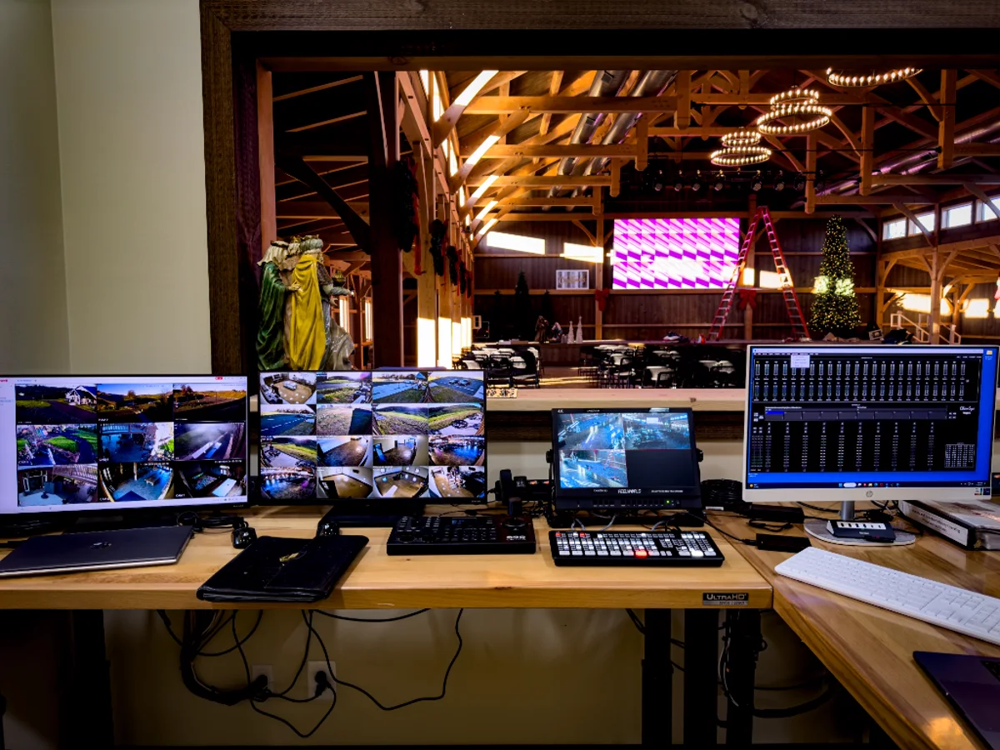
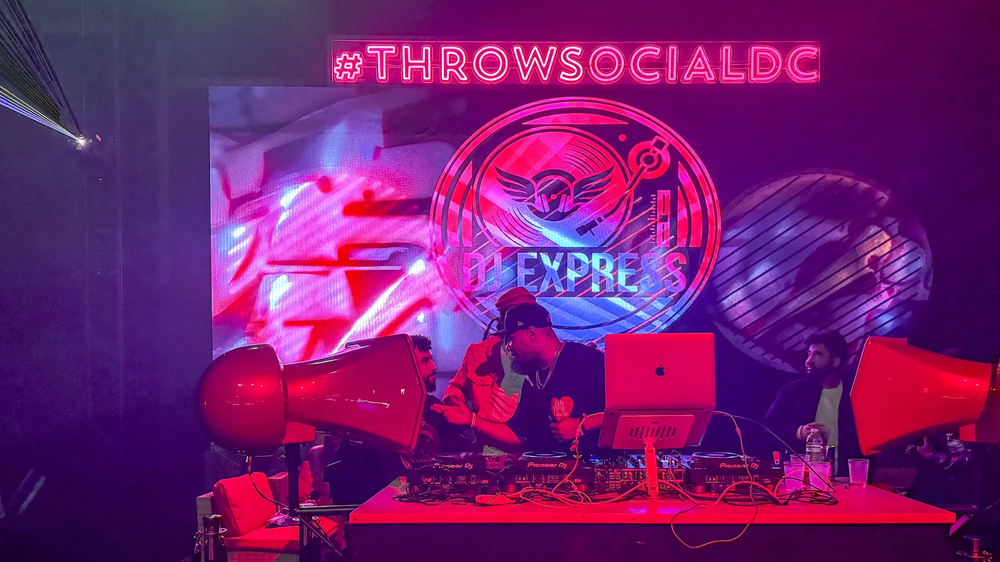

Visual systems
for real space.
Immersive content, projection mapping, generative systems, and technical direction for experiences that need to feel alive.
Approach
I work where a visual idea becomes a physical experience.
I create the content, shape the visual language, map it into the room, build the technical system, and help run it live — protecting the idea all the way through. The best briefs are the complicated ones: complex vision, many moving parts, and a finished experience that has to feel seamless.
Projects
Systems that change the feeling of a room.
 001Running
Show control systemREVd CyclingA two-room control system that lets instructors drive an LED wall and DMX lighting from fifteen clearly labelled Stream Deck buttons.Enter the case study →
001Running
Show control systemREVd CyclingA two-room control system that lets instructors drive an LED wall and DMX lighting from fifteen clearly labelled Stream Deck buttons.Enter the case study →
 002
Immersive experience centerPorsche Studio PortlandA Pixera-driven multi-surface environment built for automotive storytelling, live events, and dependable daily operation.Explore project →
002
Immersive experience centerPorsche Studio PortlandA Pixera-driven multi-surface environment built for automotive storytelling, live events, and dependable daily operation.Explore project →
 003
Immersive exhibition retrofitShifting RealitiesA 13-projector installation converted into three independent experiential zones through Mosaic, Pixera Director, calibration, and systems design.Explore project →
003
Immersive exhibition retrofitShifting RealitiesA 13-projector installation converted into three independent experiential zones through Mosaic, Pixera Director, calibration, and systems design.Explore project →
 004
Live productionCongressional Black Caucus WeekA multi-venue production week connecting custom content, LED systems, rapid changeovers, and live show continuity.Explore project →
004
Live productionCongressional Black Caucus WeekA multi-venue production week connecting custom content, LED systems, rapid changeovers, and live show continuity.Explore project →
 005
Venue visual systemClub STFUA complete club visual language spanning LED integration, projection, custom content, system support, and live VJ performance.Explore project →
005
Venue visual systemClub STFUA complete club visual language spanning LED integration, projection, custom content, system support, and live VJ performance.Explore project →

006 Technical integrationGeneration Grace ChurchAn 18-panel LED and programmable lighting system designed for performance, recording, and repeatable local operation.Explore project → 007
Public-space systemsDC WharfOutdoor playback and display systems supporting festivals, movies, holiday programming, and waterfront crowds.Explore project →
007
Public-space systemsDC WharfOutdoor playback and display systems supporting festivals, movies, holiday programming, and waterfront crowds.Explore project →

008In service Venue visual systemThrow SocialThree systems that had never met — video walls, Art-Net lighting with lasers, and camera feeds — became one instrument with one operator position.Explore project →


Capabilities
Visual systems, playback architecture, and technical execution for real space.
Projection-mapped content, multi-wall environments, live visuals, and site-specific motion.
Generative systems, AI-assisted workflows, interactive media, sensors, and custom interfaces.
Pixera, Resolume, signal flow, media servers, show control, and calm technical execution.
System design, troubleshooting, documentation, crew coordination, and operational handoff.
- TouchDesigner · real-time generative systems
- Pixera · multi-display timeline playback & mapping
- Resolume Arena · live performance VJ systems
- NotchLC video pipelines & spatial motion
- AI-assisted visual workflows & neural upscaling
- Python scripting · OSC · MIDI · WebSockets
- Novastar LED processing & cabinet calibration
- Datapath FX4 & multi-head display routing
- Blackmagic ATEM switching & SDI distribution
- Bitfocus Companion & custom Stream Deck surfaces
- Art-Net / DMX lighting & sensor integration
- Media-server rack builds & thermal preparation
- Systems architecture & signal flow design
- On-site commissioning, alignment & calibration
- Load-in, run-of-show & live V1 operation
- Multi-vendor crew & venue coordination
- Custom operator handoff & technical documentation
- Rapid troubleshooting under live pressure
Experience
Highlights below — every entry has a full page. Complete history in the résumé.
Full résumé ↗Something in mind?
Send the room, the dates, and what it needs to feel like. You get a straight answer about whether I'm the right operator for it.
